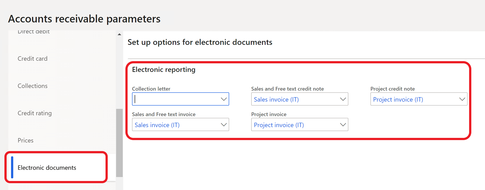
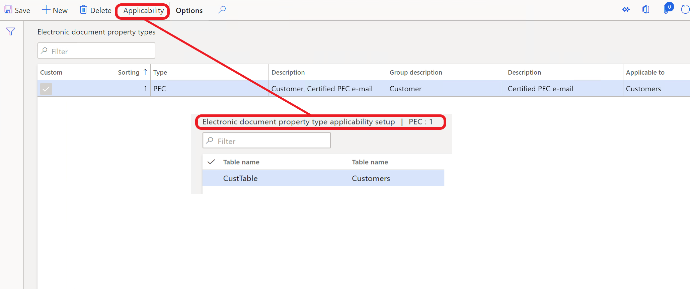
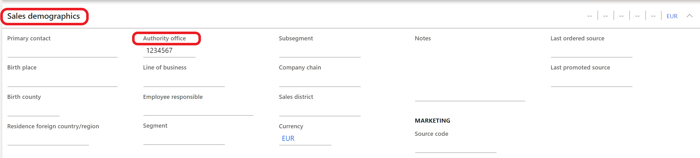
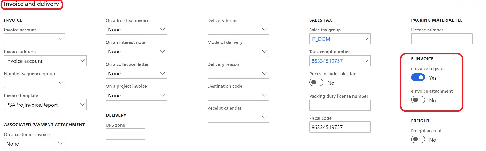
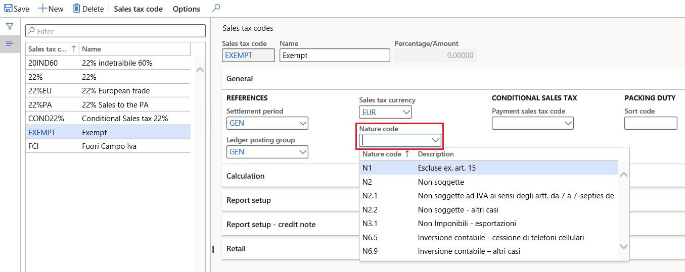
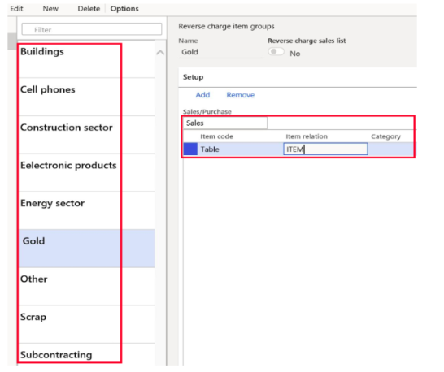
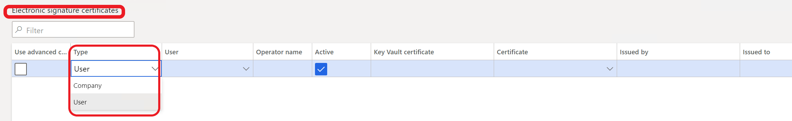
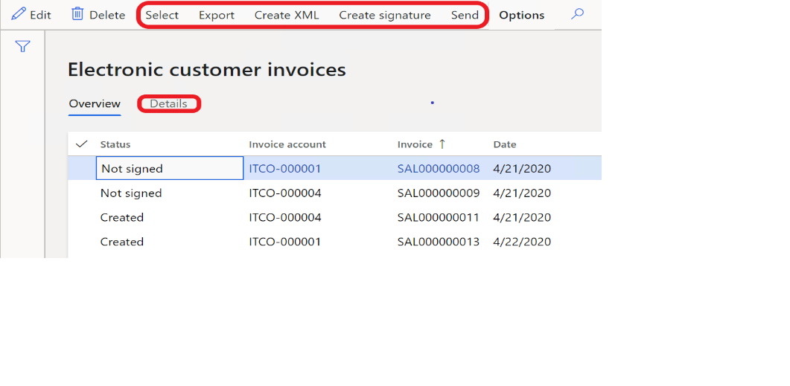

Customer electronic invoices
[!include[banner](../includes/banner.md)]This topic describes how to set up and work with the functionality for creating and sending sales invoices and project invoices in an electronic format (FatturaPA).
As of version 1.2 of the FatturaPA format, electronic invoices can be used for all types of businesses. These types include public administrations, private companies, and professionals.
Prerequisites
The primary address of the legal entity must be in Italy.
This topic contains the following information:
- Setup information
- Maintaining related base documents
- Overview of the Electronic invoice register
- Additional functionality that affects the XML file
Setup
Before you can begin to work with the electronic invoice functionality, the following data must be set up:
- Accounts receivable parameters
- Electronic invoice currency
- Electronic invoice parameters
- Electronic document properties
- Customers
- Items
- Natura codes
- Invoice types
- Digital certificates
- Optional: Destination for XML file output
Accounts receivable parameters
Select the configurations that are used to create electronic invoice XML files for sales and free text invoices, sales and free text credit notes, project invoices, and project credit notes. You can find these configurations on the Electronic document tab of the Accounts receivable parameters page (Accounts receivable > Setup > Accounts receivable parameters).

Note
The configurations must be imported before they can be selected. For more information, see Download ER configurations from the Global repository of Configuration service.
Electronic invoice currency
To report invoices in the euro (EUR) currency in an XML file, set the Print amount in currency representing the euro option to Yes on the General FastTab of the Form setup page in Accounts receivable (Accounts receivable > Setup > Form setup) and/or in Project management and accounting (Project management and accounting > Setup > Form setup).
Note
If the Print amount in currency representing the euro option is set to No, a related XML file will be generated in the original invoice currency.
To use this functionality, import the following Electronic reporting (ER) configurations, or later version of them, from Shared asset library in Microsoft Dynamics Lifecycle Services (LCS):
- Invoice model.version.231
- Invoice model mapping.version.231.164
- Sales invoice (IT).version.231.91
- Project invoice (IT).version.231.90
Electronic invoice parameters
You must set electronic invoice parameters to specify business scenarios and company-specific information.
- Go to Accounts receivable > Setup > Electronic invoice parameters.
- On the General tab, specify the electronic signature requirement.
- On the Company information tab, specify the company information and tax representative, as required. This information overrides the information in the legal entity record.
- On the Art. 2250 Civil code registration tab, provide any required information if the company is registered under the terms of Article 2250 of the Italian Civil Code.
- On the Number sequences tab, fill in number sequences for the eInvoice unique file number and eInvoice transmission number references.
Electronic document properties
The functionality for electronic document properties is used to set up the output to XML document blocks for different business cases. Here are some examples:
- A value-added tax (VAT) registration number for customers who aren't in the European Union (EU) and don't have VAT registration codes
- A certified email address (posta elettronica certificata [PEC]) for private companies or professionals
- A stamp duty (payable and not payable by the customer)
- Data about a customer's representative
For the functionality to work, the following data must be set up:
Electronic document property types (Accounts receivable > Setup > Electronic document property types) and the table that each document property type is applicable to. For electronic invoice functionality, the Customers and Legal entities tables are used.

Required values in the specified tables at the customer and legal entity levels:
- Customer: Go to Accounts receivable > Customers > All customers, and then, on the Action Pane, on the Customer tab, select Electronic document properties.
- Legal entity: Go to Organization administration > Organizations > Legal entities, and then, on the Action Pane, select Electronic document properties.
The specified values are used for output to the XML file blocks. The following table provides information about how and where those values are used.
| Business scenario | Electronic document property type | Electronic document property type description | Applicability (table) | Where to use the values | Element in the XML file |
|---|---|---|---|---|---|
| Customers who are outside the EU and don't have VAT registration codes. For these customers, the VAT registration number should be 00000000000. | VATnonEU | Example: Customer, non-EU VAT number | CustTable (Customers) | In customer electronic document properties, set the Value field to 00000000000. | IdCodice (CessionarioCommittente\DatiAnagrafici\IdFiscaleIVA block) |
| Certified email address (PEC) for private companies or professionals | PEC | Example: Customer, Certified email address | CustTable (Customers) | In customer electronic document properties, set the Value field to <PEC>. | PECDestinatario (DatiTrasmissione block) |
| Stamp duty that isn't included in the invoice total for sales invoices, and that is or isn't included for project invoices | Bollo Note: This document property type is used for sales order invoices, free text invoices, and project invoices. |
Example: Stamp duty, included/not included into invoice totals | CompanyInfo (Legal entities) | In legal entity electronic document properties, set the Value field to <Charge code/project category that is used for stamp duties>:
|
ImportoBollo (DatiBollo block) |
| Stamp duty that is included in the invoice total | BolloPay Note: This document property type is used only for sales order invoices and free text invoices. |
Example: Stamp duty, included into invoice totals | CompanyInfo (Legal entities) | In legal entity electronic document properties, set the Value field to <Charge code/project category that is used for stamp duties>:
|
ImportoBollo (DatiBollo block) |
| Representative | TaxRepPaese, TaxRepCodice, TaxRepDenominazione, TaxRepNome, TaxRepCognome | Any description | CustTable (Customers) | In customer electronic document properties, set the Value field to IT for the TaxRepPaese document property type. For other types, fill in data for the representative. | Cognome (RappresentanteFiscale block) |
| Invoice types | DocumentType | Example: Invoice, document type | CustInvoiceJour (Customer invoice journal), ProjInvoiceJour (Project invoice) | Go to Accounts receivable > Inquiries and reports > Invoices > Invoice journal or Project management and accounting > Project invoices > Project invoices, and set the Value field to a document type, such as TD16. | TipoDocumento (DatiGeneraliDocumento block) |
Note
The preceding table uses the following shorthand:
- "Customer electronic document properties" refers to the Electronic document properties page that is opened by selecting Electronic document properties on the Customer tab on the Action Pane of the All customers page (Accounts receivable > Customers > All customers).
- "Legal entity electronic document properties" refers the Electronic document properties page that is opened by selecting Electronic document properties on the Action Pane of the Legal entities page (Organization administration > Organizations > Legal entities).
On the Electronic document property types list page, the Description field is automatically filled in when a user enters information in the Group description and Description fields.
The electronic document property type must have the same code that is specified in the table.
Use project categories for stamp duty
Go to Project management and accounting > Setup > Categories > Project categories to set up project categories that have a transaction type of Fee or Expense. The category ID should equal the value that is defined for the Bollo document property type at the legal entity level. For more information, see the previous table.
The project category of the Fee transaction type can be used only for stamp duty that is included in the invoice. The project category of the Expense transaction type can be used for both stamp duty that is included in a customer invoice and stamp duty that isn't included. In both cases, the Bollo document property type is used.
When you create Fee or Expense journal lines, select the category that was defined for stamp duty, and enter a cost price. The system considers this cost price the stamp duty amount. If you enter a sales price that equals the cost price amount, the system considers this amount included in invoice totals. The sales price amount equals 0 (zero), and the transaction isn't included in invoice totals.
Note
You can use only one of the journal types (Fee or Expense) for stamp duty. A company that uses only payable stamp duty can use the Fee journal type. If a company uses both payable and non-payable stamp duty, it's better to use the Expense journal type.
Customers
Authority office field
You can find the Authority office field on the Sales demographics FastTab of a customer record (go to Accounts receivable > Customers > All customers, and open the customer record in Edit mode).
The value of this field is used to define the type of communication (business-to-government [B2G] or business-to-business [B2B]):
- If the length of the value is 6, the customer is considered a public administration (the transmission format equals FPA12).
- If the length of the value is 7, the customer is considered a private company or professional (the transmission format equals FPR12).
In both cases, the system enters the value of this field in the CodiceDestinatario tag in the XML file.

If the Authority office field is blank, the system considers the customer a private company or professional (the transmission format equals FPR12), and enters 0000000 in the CodiceDestinatario tag in the XML file. In this case, a certified email address (PEC) should be set up. For more information, see the table in the Electronic documents properties section earlier in this topic.
Activate automatic creation of electronic invoices
Go to Accounts receivable > Customers > All customers, and open a customer record in Edit mode. Then, on the Invoice and delivery FastTab, in the E-invoice section, find the eInvoice register option. If this option is set to Yes, the system automatically creates the record on the Electronic customer invoices list page. For more information, see the Electronic invoice register section later in this topic.

In the E-invoice section, you can also set the eInvoice attachment option to Yes. In this case, after you print an invoice (either during or after posting), the system automatically attaches the PDF file to the invoice and electronic invoice (see the Electronic invoice register section), and the file is included in the XML file (Allegati block).
Items
If there are product lines on an invoice, the CodiceArticolo block is filled in based on product data. This data includes the product bar code, the internal product number or item number, and the external item description. This information can be found by selecting options in the Related information group on the Sell tab on the Action Pane of the Released products page (Product information management > Products > Released products).
The CodiceTipo field is set according to the following rules:
- If there is a bar code, this field is set to EAN.
- If there isn't a bar code, and the record on the External item description page exists for the product and the customer, this field is set to the value from the Description field.
- If there isn't a bar code, and the record on the External item description page doesn't exist for the product, this field is set to the Codice Art. fornitore text.
The CodiceValore field is set according to the following rules:
- If there is a bar code, this field is set to the bar code.
- If there isn't a bar code, and the record on the External item description page exists for the product and the customer, this field is set to the value from External item number field.
- If there isn't a bar code, and the record on the External item description page doesn't exist for the product and customer, this field is set to the value from the Item number field.
Natura codes
You can manually associate Natura codes with related sales tax codes, or you can let the system automatically determine the appropriate Natura codes for transactions. Manually associated Natura codes have higher priority than automatically determined Natura codes and will override them.
Follow these steps to define Natura codes and manually associate them with sales tax codes.
- Go to Tax > Setup > Sales tax > Nature codes.
- Create a record.
- In the Nature code field, enter a valid Natura code.
- In the Description field, enter an explanation of what the code is used for.
- Repeat steps 2 through 4 to create as many additional Natura codes as you require to cover all related business operations.
- Go to Tax > Indirect taxes > Sales tax > Sales tax codes, and select a required sales tax code.
- On the General FastTab, in the Nature code field, select one of the Natura codes that you just created.

Reverse charge groups
Reverse charge groups are required when a company uses the reverse charge functionality. They are used to automatically determine the Natura codes that are specific to reverse charge operations.
To define specific reverse charge groups for specific products or categories, go to Tax > Setup > Reverse charge item groups.

Additionally, you should set up application-specific parameters that use these reverse charge groups.
For more information about this functionality, see the "Reverse charge configuration" section in A country-specific hotfix to support changes in "FatturaPA" format of Italian electronic invoices in Microsoft Dynamics 365 Finance.
Automatically assigned Natura codes
The system automatically assigns the following Natura codes, depending on the operation.
| Code | Description | Required configuration |
|---|---|---|
| N1 | Excluded pursuant to Art. 15 | The sales tax code's VAT type field is set to Exempt, and the sales tax code is associated with the exempt code that is marked as Exempt Art.15 in the Exempt reason field. |
| N2.2 | Not subject to VAT - other cases | The sales tax code's VAT type field is set to Not subject to VAT. |
| N3.1 | Non-Taxable - exports | The sales tax code's VAT type field is set to Zero, and the customer's address is outside the EU. |
| N3.2 | Non-Taxable - intra-community transfers | The sales tax code's VAT type field is set to Zero, and the customer's address is in the EU. |
| N3.3 | Non-Taxable - sales to San Marino | The sales tax code's VAT type field is set to Zero, and the customer's address is in San Marino. |
| N3.5 | Non-Taxable - following declarations of intent | The sales tax code's VAT type field is set to Zero, and a valid intent letter is registered. |
| N3.6 | Non-Taxable - other cases | This code is the default value for all other cases where the sales tax code's VAT type field isn't set to Standard. |
| N4 | Exempt | The sales tax code's VAT type field is set to Exempt, and the sales tax code is associated with an exempt code that is marked as something other than Exempt Art.15 or Edge regime in the Exempt reason field. |
| N5 | Margin scheme / VAT not shown on the invoice | The sales tax code's VAT type field is set to Exempt, and the sales tax code is associated with the exempt code that is marked as Edge regime in the Exempt reason field. |
| N6.1 | Reverse charge - transfer of scrap and other recycled materials | The sales tax code is marked as Reverse charge, and the related reverse charge group is associated with the Scrap value in the application-specific parameters. |
| N6.2 | Reverse charge - transfer of gold and pure silver | The sales tax code is marked as Reverse charge, and the related reverse charge group is associated with the Gold value in the application-specific parameters. |
| N6.3 | Reverse charge - subcontracting in the construction sector | The sales tax code is marked as Reverse charge, and the related reverse charge group is associated with the Subcontracting value in the application-specific parameters. |
| N6.4 | Reverse charge - sale of buildings | The sales tax code is marked as Reverse charge, and the related reverse charge group is associated with the Buildings value in the application-specific parameters. |
| N6.5 | Reverse charge - sale of cell phones | The sales tax code is marked as Reverse charge, and the related reverse charge group is associated with the Cell phones value in the application-specific parameters. |
| N6.6 | Reverse charge - sale of electronic products | The sales tax code is marked as Reverse charge, and the related reverse charge group is associated with the Electronic products value in the application-specific parameters. |
| N6.7 | Reverse charge - services for the construction sector and related sectors | The sales tax code is marked as Construction sector, and the related reverse charge group is associated with the Scrap value in the application-specific parameters. |
| N6.8 | Reverse charge - energy sector operations | The sales tax code is marked as Reverse charge, and the related reverse charge group is associated with the Energy sector value in the application-specific parameters. |
| N6.9 | Reverse charge - other cases | The sales tax code is marked as Reverse charge, and the related reverse charge group is associated with the Other value in the application-specific parameters. |
| N7 | VAT paid in another EU state | The sales tax code's Country/region type field is set to EU. |
Invoice types
The following types of invoice documents are supported and will automatically be filled in:
- TD01 – Invoice
- TD04 – Credit note
- TD05 – Debit note
- TD20 – Self-invoice
If a required document type isn't listed, you can manually adjust the document type in the invoice journals. To enable manual adjustment, complete the following setup:
- Electronic document property definition
- Invoice document type registration
For more information, see the "Invoice types configuration" section in A country-specific hotfix to support changes in "FatturaPA" format of Italian electronic invoices in Microsoft Dynamics 365 Finance.
Digital certificates
To electronically sign electronic invoices by using a certificate of either the Company type or the User type, go to Accounts receivable > Setup > Electronic signature certificates.

The party that is issuing invoices must use a qualified signature certificate to sign each FatturaPA file that is transmitted to the exchange system (Sistema di Interscambio [SdI]). A qualified signature certificate can be obtained from one of the certifiers in the list of authorized certifiers.
Microsoft Dynamics 365 Finance supports the XAdES-BES signature format. To enable Finance to support FatturaPA, follow these steps.
On client computers, in the Application server machine field of the Personal node, install and configure digital certificates that have private and public keys.
Note
You can complete the installation and configuration by using standard Windows functionality.
Define company-level certificates and user-level certificates, as required.
Destination for XML file output
If XML files must be sent as output to a specific place when invoices are posted (for example, if they must be sent to a SharePoint folder), set up a document type, and then set up a destination. For more information about these steps, see Configure document management and Electronic reporting (ER) destinations.
Note
The Print invoice option must be set to Yes. If the destination is set up, the status of the electronic invoice record for the invoice is automatically set to Sent.
Maintain related base documents
Companies can report additional information about some base documents that are related to invoices. This section describes how to enter additional data, such as the tender procedure identification code (Codice Identificativo di Gara [CIG]) and the unique project code (Codice Unico di Progetto [CUP]) that is managed by the Inter Ministerial Committee for Economic Planning.
Here are some examples:
- The DatiOrdineAcquisto block contains information that is related to the purchase order.
- The DatiContratto block contains information that is related to the contract.
- The DatiConvenzione block contains information that is related to the agreement.
- The DatiRicezione block contains information that is related to data about the reception phase. This data is present in the management system that is used by the PA (tax agencies).
- The DatiFattureCollegate block contains information that is related to invoices that were previously transmitted and that the current document is connected to. This block is used for cases where a credit note and/or invoice is forwarded in accordance with previous advance payment invoices.
To enable the system to enter information in these blocks, set the following fields:
- On the Sales order page (Accounts receivable > Orders > All sales orders), in the Header view, on the Setup FastTab, set the fields in the Base document section.
- On the Free text invoice page (Accounts receivable > Invoices > All free text invoices), in the Header view, on the General FastTab, set the fields in the Base document section.
- On the Project proposal page (Project management and accounting > Projects > All projects), on the Action Pane, on the Manage tab, in the Bill group, select Invoice proposal, and then set the fields in the Base document section.
Note
As the following table shows, data from the fields in the Base document section is sent as output from different blocks, depending on the value of the Base document field.
| Value of the Base document field | Block that data is sent from |
|---|---|
| Payment order | DatiOrdineAcquisto |
| Contract | DatiContratto |
| Agreement | DatiConvenzione |
| Management system | DatiRicezione |
| Original invoice | DatiFattureCollegate |
For each base document, users can add details about the document number and date, tender procedure identification code (CIG), unique project code (CUP), and agreement code.
Base documents for public sector companies
In Italy, there is a legal requirement that public sector companies provide traceability of tender procedures codes (CIG) and projects codes (CUP) during invoicing and payments. To provide traceability, additional control of CIG and CUP codes is implemented for public sector companies. For more information about this functionality, see Italian localization - Payment traceability.
Electronic invoice register
To view all customer electronic invoices and perform various actions, go to Accounts receivable > Invoices > E-Invoices > Electronic invoices.
On the Electronic customer invoices page, you can perform the following actions:
Select Select to select invoices, based on various criteria. This function is useful if the eInvoice register option is set to No.
Select Create XML, Create signature, and Send to create XML files and a digital signature for selected invoices, and send the invoices.
Select Export to export a selected invoice to an XML file.
Note
The system sends a file to the folder that is set up on your computer. The destination settings aren't used.
Select the Details tab to view details of the electronic invoice.
Note
The Electronic invoices page (Project management and accounting > Project invoices > E-invoices > Electronic invoices) resembles the Electronic customer invoices page and has the same functions.

Additional functionality that affects the XML file
Tax invoice for goods delivered for free
For information about how to set up and work with this functionality, see Tax invoice for goods delivered for free.
On the Distribution page (Sales and marketing > Setup > Distribution), if the Reason for delivery field is set to Goods for free, and the Invoice account field is blank, the TipoCessionePrestazione element is sent as output in the XML file.
Intent letters – Invoicing of usual exporters
For information about how to set up and work with this functionality, see Intent letters – Invoicing of usual exporters.
If an intent letter is set up for a customer, the Causale element (DatiGeneraliDocumento block) that has the number of the intent letter is sent as output in the XML file.
Submit your requests to the Documentation Team